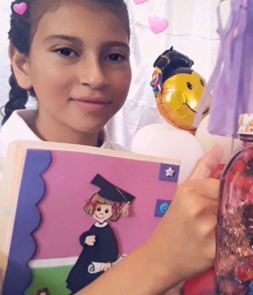
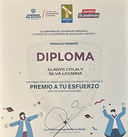
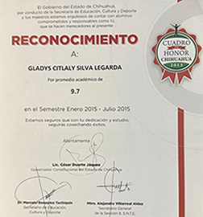
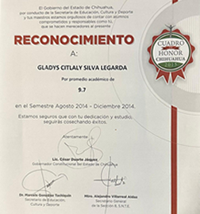
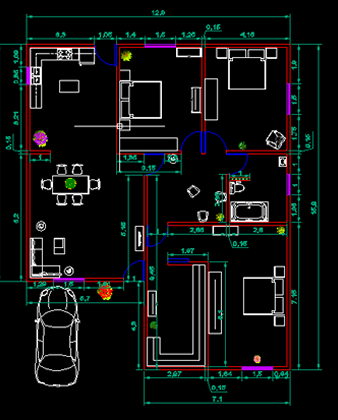
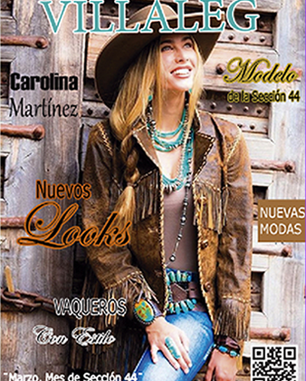
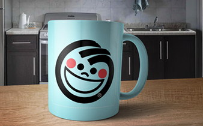
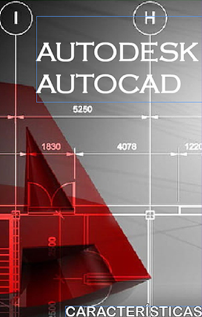
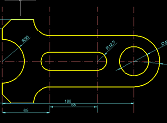
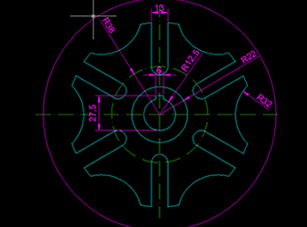

|
 |
 | ||
In kindergarten, I learned to socialize, recognize letters and numbers, and do creative things like draw and paint. 2011-2013 |
In elementary school, I studied core subjects such as math, Spanish, science, and social studies, and improved my reading and writing skills. 2013-2019 |
In high school, I delved deeper into math, science (biology, chemistry, physics), history, and civics, and began to think critically. 2019-2022 |
In high school, I prepared for university with more specific subjects and was able to choose electives based on my interests. Each stage had its focus and objectives to continue learning. 2022-2025 |
| Adobe Master Collection |
 |
|||||
| Microsoft Office |
|  |  |  |
|  |  | |
|---|---|---|
|  | ||
|  |  |  |
| CECyT 02 | |
digital graphic design, electromechanics and industrial food production. It is located at km. 15 La Junta, Guerrero. Telephone: 635-583-05-56
|
 |